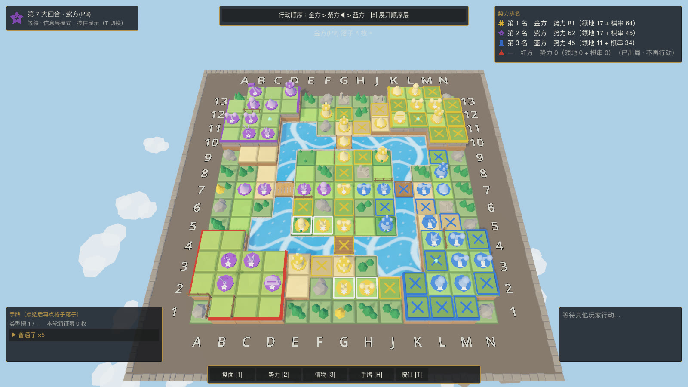
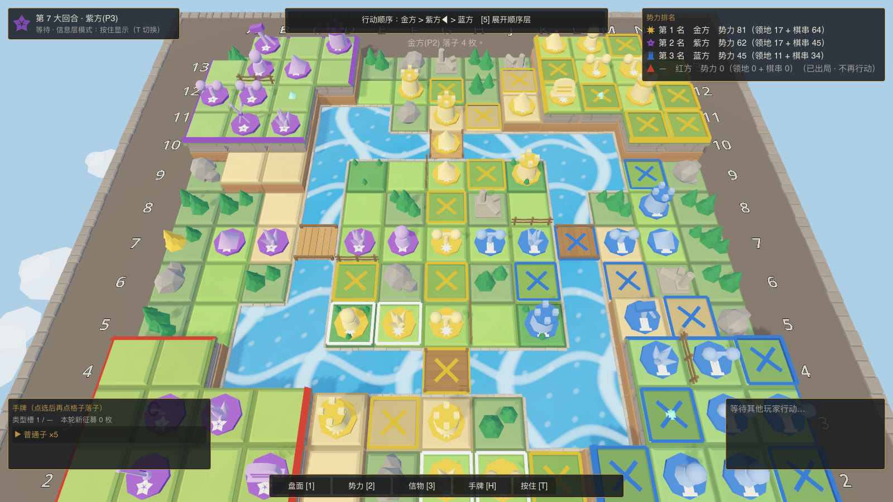
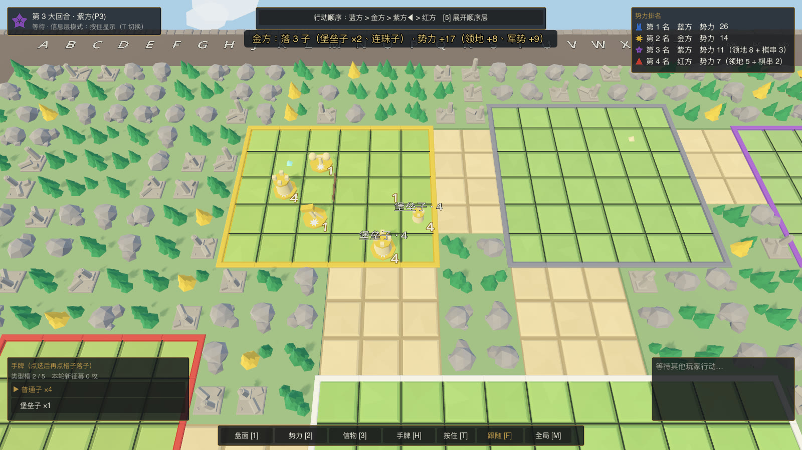
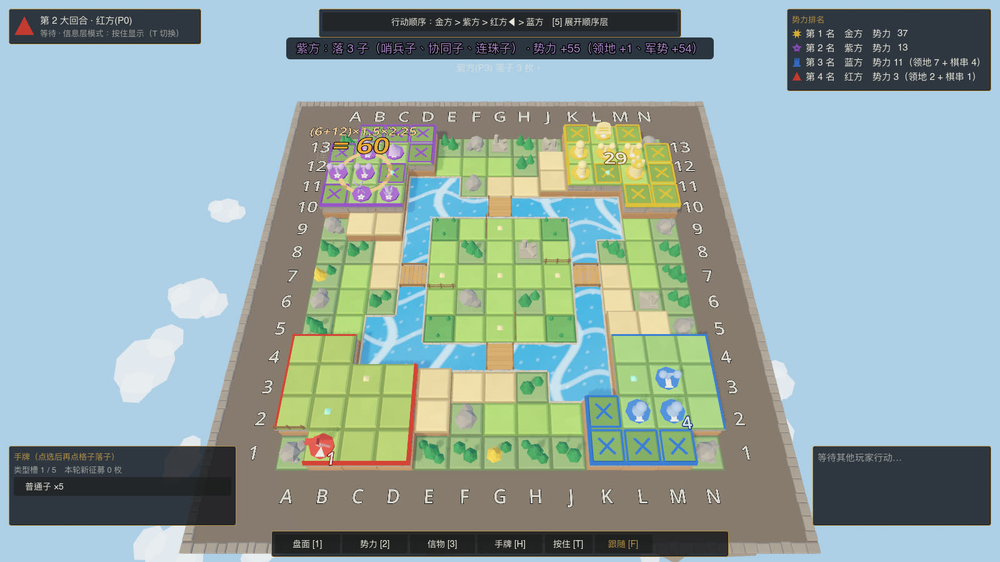
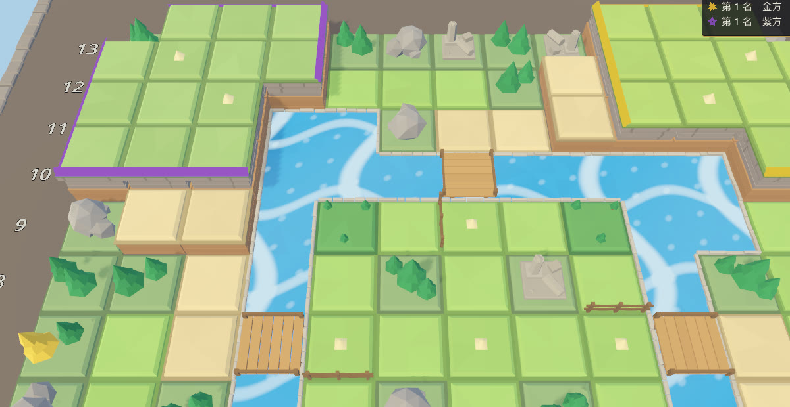
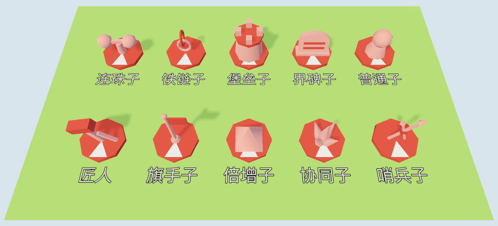
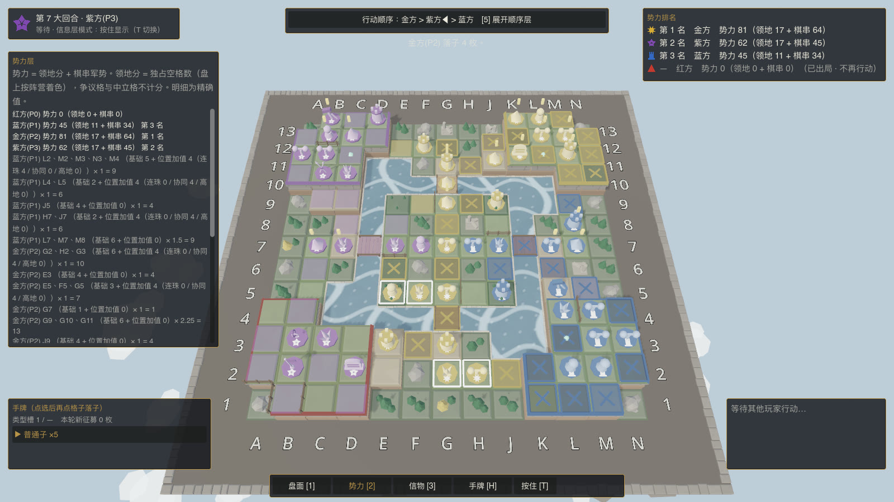
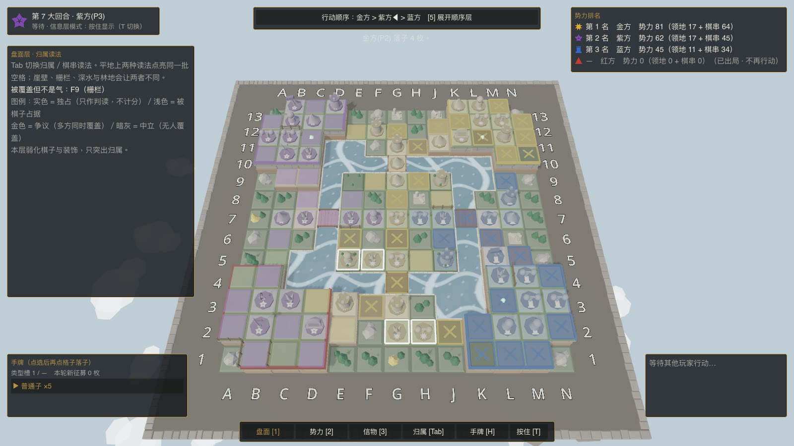
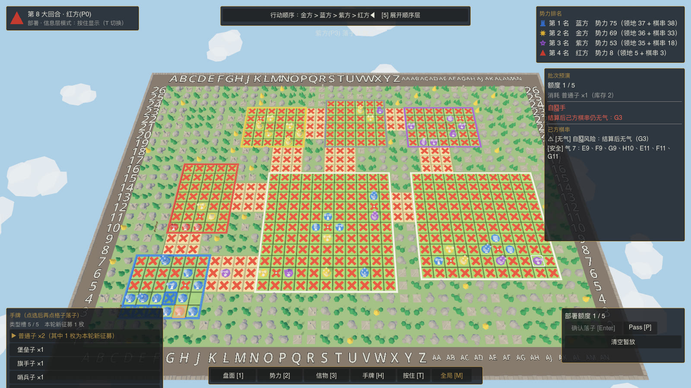

围杀 Siege回合制策略构筑 · 原型
2–4 人共用一张棋盘。像围棋一样围住对手的棋串把它提走，同时抢地块、找信物，把“加值 × 倍率”滚成一次高风险的势力爆发。
当前版本 v0.3.0（2026-10-06）。单机人机对局，1 名玩家对 1–3 个 AI；免安装，解压即玩。首次打开的系统提示见下载与安装。

怎么玩
棋盘空间博弈约占六成，随机构筑约占四成。标准局 20–30 分钟，不设固定轮数。胜负应当能用落点、阵型和取舍来解释，而不是刷新运气。
- 探索信物把棋子的覆盖铺到信物格上，翻开并控制它。
- 定向征募每回合从展示的候选里挑棋子进手牌。
- 批次落子一次暂放多枚，看完预演再整批确认。
- 围杀与占地断掉对手棋串的气就提走；独占的空格算领地。
- 势力与先手领地加棋串军势就是势力；势力排名高的，下一大回合先行动。
围棋式围杀
相连的己方棋子组成棋串、共享气。气被堵死，整串被提走；自杀手、同形与破坏活形的落点会事先打叉。
加值 × 倍率
十种棋子各有分工：堡垒子加值、倍增子给整串乘 1.5 倍，连珠子与协同子看排布。棋串连到 3 / 5 / 8 / 12 枚各升一阶阵型，每阶再乘 1.5——越长越值钱，也越容易被切断。
会改变规则的地形
三档高度（崖壁断气、居高临下）、深水与桥、林地、栅栏，以及荒漠、沼泽、岩台、浅滩。匠人落子时还能搭桥、立栅、烧林。
看得见的判读
盘面、势力、信物、顺序四个信息层随时切换；每次落子前都有预演，告诉你会提走什么、势力怎么变。结算时算式一步步揭示，数值越大字越大、越红。
截图
全部是游戏内实拍。地图元素是引擎里程序建模的低多边形部件，不用贴图。








下载与安装
这是原型版本，没有购买开发者证书，所以两个系统第一次打开时都会拦一下。下面是放行的办法。
macOS
Siege-macos.zipmacOS 11 及以上（Intel 机型 10.15 及以上）- 解压，得到
Siege.app，可以拖进“应用程序”。 - 第一次不要双击：按住 Control 点它（或右键）→“打开”→ 再点“打开”。
- 如果仍被拦下：系统设置 → 隐私与安全性 → 页面下方点“仍要打开”。
Windows
Siege-windows-x64.zipWindows 10 / 11，64 位- 解压整个
Siege文件夹（三样东西要放在一起，别只拿出 exe）。 - 运行
Siege.exe。 - 出现“Windows 已保护你的电脑”时：点“更多信息”→“仍要运行”。
显卡需要支持 Vulkan（Windows）或 Metal（macOS）。不需要另装 .NET，运行时已经打在包里。遇到问题请到 Issues 反馈。
操作
不带参数启动会先进选图界面：四张内置图（标准 13×13、双人 9×9、三人 11×11、边疆 25×30）或随机图，再选 AI 难度。
| 做什么 | 怎么做 |
|---|---|
| 开局 | 点一块出生区插旗 → 进入征募 |
| 落子 | 左下手牌选棋子类型 → 点格子暂放 → 右侧看预演 → Enter 整批确认 |
| 跳过 | P Pass |
| 信息层 | 1 盘面 2 势力 3 信物 4 顺序；Tab 切换盘面读法；T 切换按住 / 点击显示 |
| 手牌 | H 打开手牌面板；V 收起征募面板 |
| 匠人 | E 轮换地形改造目标（搭桥 / 立栅 / 烧林） |
| 视角 | 方向键或 WASD 平移，滚轮缩放，M 全局预览，空格 回到自家 |
| 看对手 | 对手落子时镜头自动跟过去、轮到你再回来；F 开关跟随。对手行动期间你自己动了镜头，这一轮就不再跟 |
从源码运行
需要 Godot 4.7.2 .NET 版与 .NET 8 SDK。规则内核是纯 C#，不依赖引擎，自带测试。
git clone https://github.com/Skysolderone/geme_demo.git
cd geme_demo
dotnet build src/godot/Siege.Godot.csproj
godot --path src/godot # 进选图界面
godot --path src/godot -- --map=board:1 # 直接开一张棋盘档地图更新记录
v0.3.0
- 新规则阵型：棋串连到 3 / 5 / 8 / 12 枚依次为一至四阶，每阶让整串军势再乘 1.5，与倍增子叠加。旧存档仍按旧规则计分。
- 军势揭示：结算时每条刚落子的棋串依次揭示算式（基础 → 加值 → 倍增 → 阵型 → 结果），数值分五档，字号、颜色、亮环与音高逐档递增，最高档轻微震屏。
- 势力栏到账、棋串旁的常驻军势也按档放大；揭示期间该棋串的常驻数字先隐藏，不再重复显示。
- 界面主题统一：面板分三级，按钮状态与字号、间距成套；势力排名按列对齐，行动顺序条带阵营徽记并标出当前行动者，手牌名称与数量分列。
v0.2.0
- 镜头跟随：对手落子不在画面中央时镜头平滑跟过去，轮到你再回来；F 开关。
- 对手回合摘要：落了几枚什么子、提了几枚、势力涨跌及领地 / 军势分项。
- 落子与提子的飘字停留更久、字更大；每条棋串旁常驻显示军势。
v0.1.0
- 第一个可下载的版本：macOS 通用包与 Windows 64 位包。
- 地图元素全套精修：地砖倒角、缓坡与崖壁分层、河床与河岸石沿、新的桥与栅栏、重建的岩石树木与遗迹、外圈石沿。
- 十种棋子、八种地表、四档 AI 难度、棋盘档随机地图、结算演出与音效、带入带出。